A platform that helps teams organise meetings and keep track of what came out of them.
Unifies is a B2B SaaS startup. I was the only designer on it from October 2024 to May 2025 and led the design from structure and flows to the UI kit – for web and mobile.
The side menu has three sections – Overview, Calendar and Transcriptions – with a New Meeting button above them. Around them: onboarding with workspace and integrations setup, availability, booking pages, notifications and settings.
- Sign-in
- Connect to Workspace
- Sign in with Google
- Complete Setup
- ClickUp
- Telegram
- Connect to Workspace
- Overview
- Next meeting · Join
- Today’s meetings
- AI panel
- AI chat
- No meetings
- Calendar
- Day
- See all · overlaps
- Week
- Month
- Day
- Transcriptions
- List of meetings
- Meeting
- Summary
- Action Items
- Key Questions
- Transcript
- Meeting
- No transcriptions
- No summaries
- List of meetings
- New Meeting
- Meeting form
- Date picker
- Participants
- Transcription on/off
- Meeting form
- Mobile menu
- Notifications
- Availability
- Booking Pages
- Settings
- Screen
- Modal / sheet
- Block on a screen
- Empty state
- Menu item
- 01Create a meetingWith the form or in chat: the assistant asks for the purpose and duration
- 02Add peopleThe whole project at once or individual participants
- 03See it in the dayThe meeting shows up on the overview and in the calendar
- 04JoinJoin Meeting – from the overview or the calendar
- 05Get the outcomeTranscriptions: summary, tasks, questions and transcript
The next meeting leads the screen
- Idea
- The overview answers one question: what’s on today and what to join right now.
- What I did
- The next meeting is highlighted and has a Join Meeting button. The rest sit in a quiet list with time, description and participants. Above it – how many meetings are still ahead.
- Detail
- When there are no meetings, the screen says so instead of staying blank.

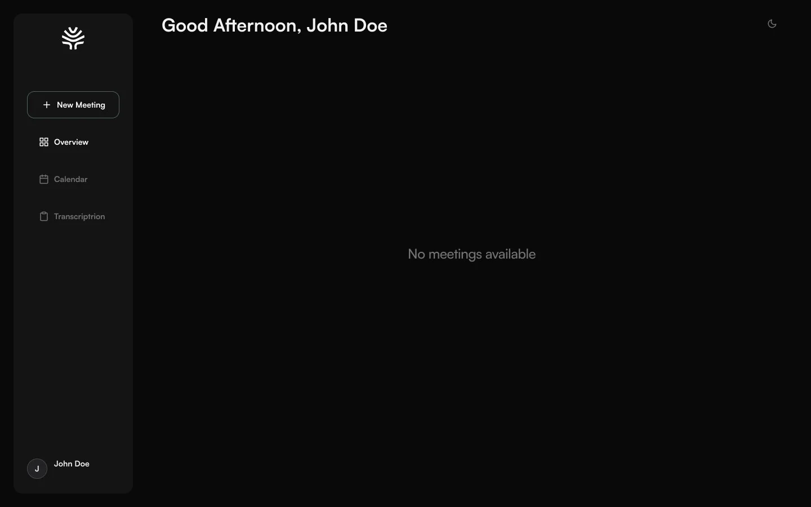
A meeting – by form or in a chat with AI
- Idea
- The same meeting details can be set two ways: fill in fields or just say it.
- What I did
- The New Meeting form: name, project, date and time, repeat, participants, description. On the overview there’s an AI panel with quick actions – create a meeting, prepare an agenda, summarise the last call – and a chat where the assistant asks for the purpose and duration one step at a time. You can type or use voice.
- Detail
- Participants can be added as a whole project in one tap or picked one by one. Transcription is a toggle in the form – it’s switched on per meeting.
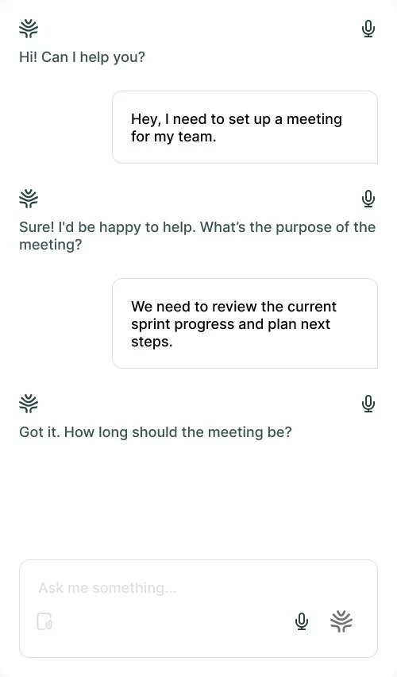
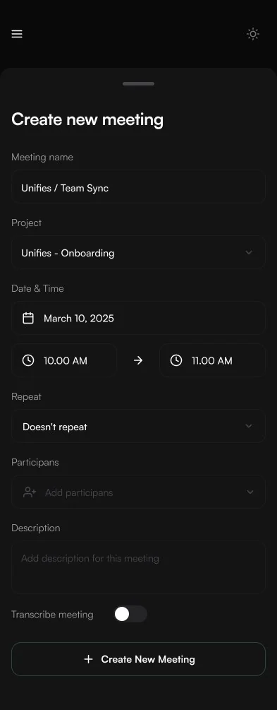
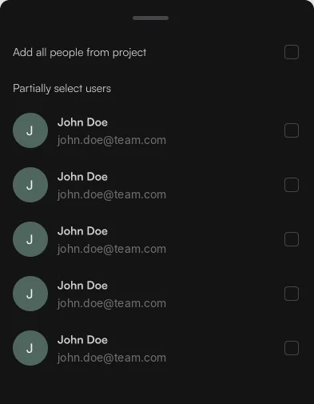
A meeting’s outcome – four tabs, not one block of text
- Idea
- After a meeting people look for different things: what was decided, who does what, what’s still open and what exactly was said.
- What I did
- Summary, Action Items, Key Questions and a Transcript with timestamps and names – each in its own tab.
- Detail
- Summaries and transcripts have empty states for when there’s no data yet.
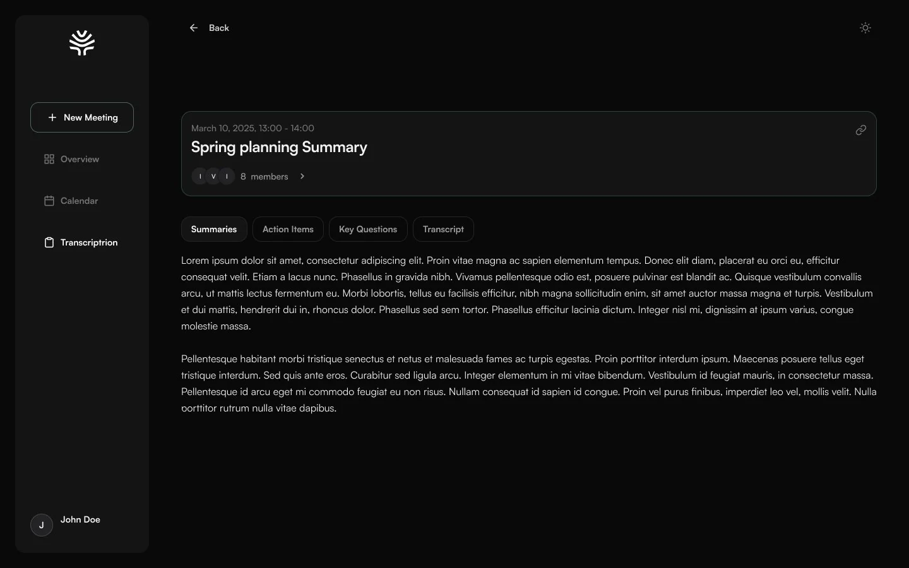
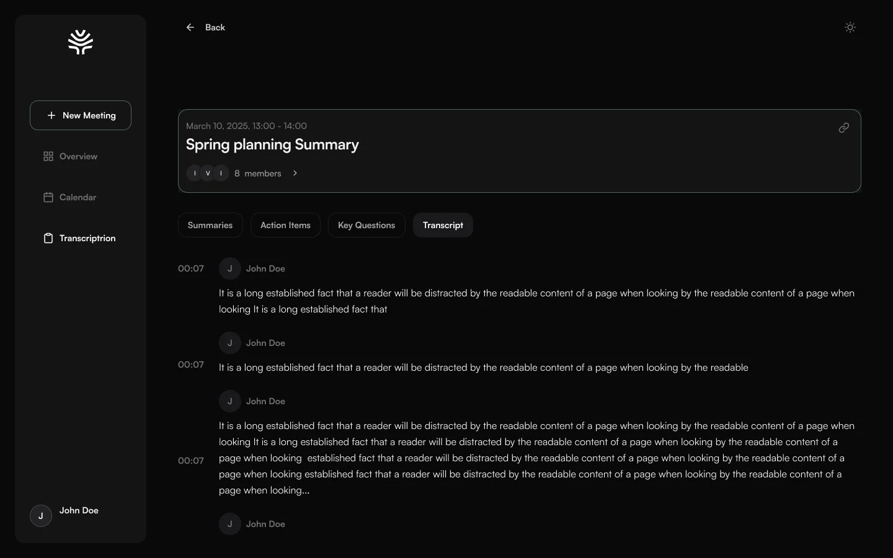
The calendar copes with overlapping meetings
- What I did
- Meetings sit on a time grid with a “now” line. Short ones are compact chips, long ones expand with participants, and those that don’t fit go under See all.
- Detail
- Day, week and month switch in one control.
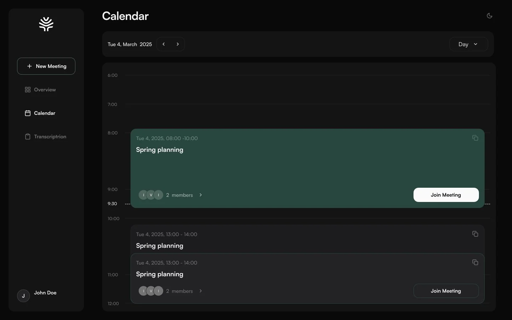
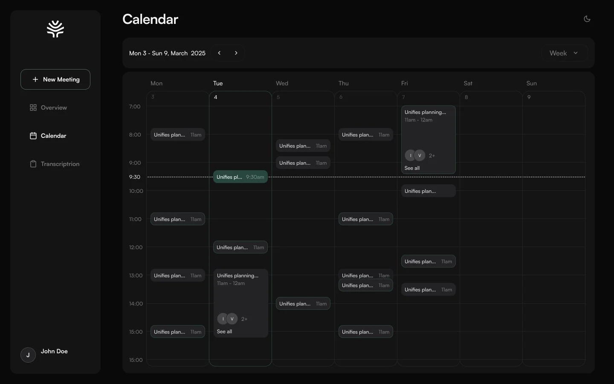
Onboarding and integrations
Sign-in with Google and connecting a workspace, then integrations with ClickUp and Telegram.
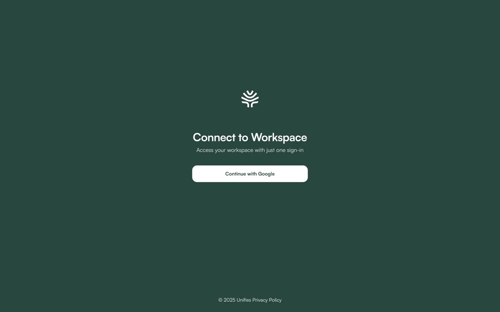
Mobile
The same scenarios on a phone: today’s overview, the calendar, a transcript and creating a meeting. The menu hides behind a burger.
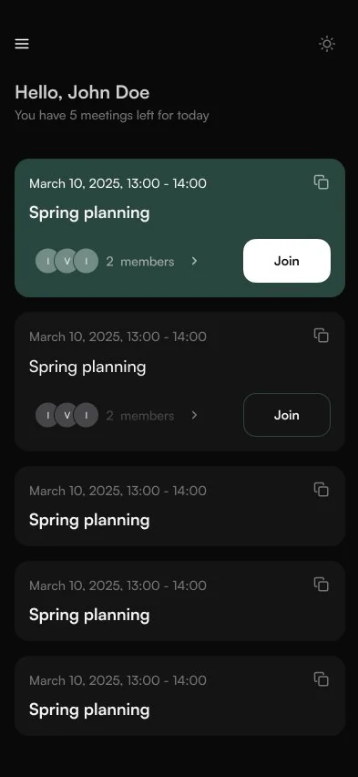
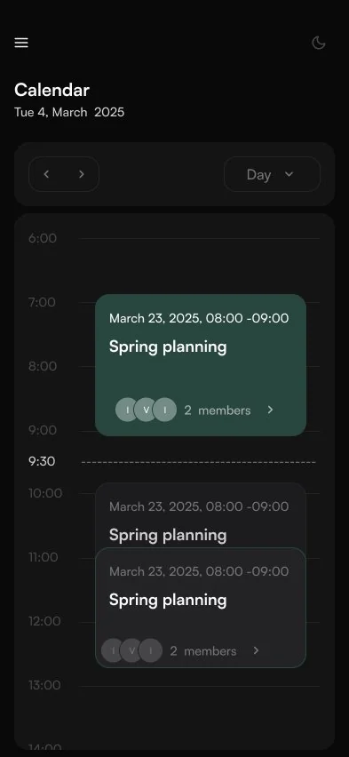
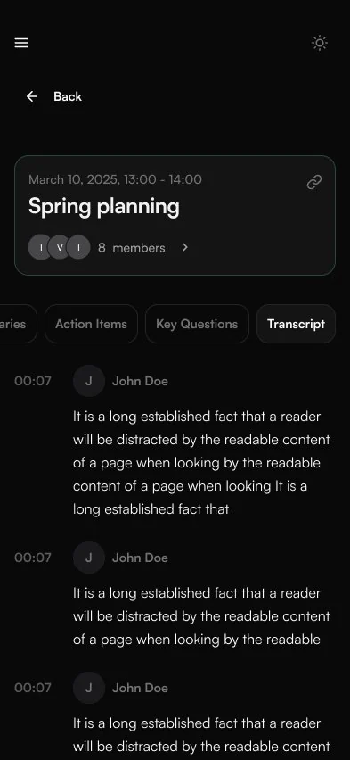
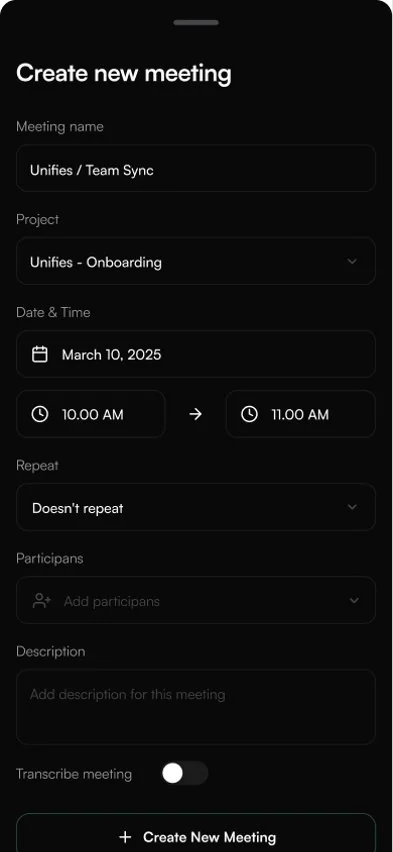
Colours live in tokens with usage rules, so the same components work in two themes. Dark is the main one; light is built from the same tokens. The UI kit also covers typography, buttons, inputs, checkboxes and cards.
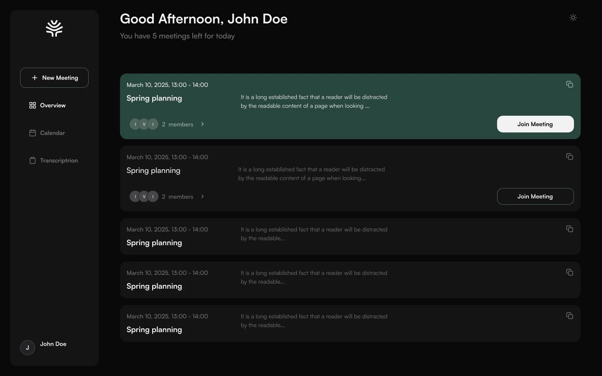
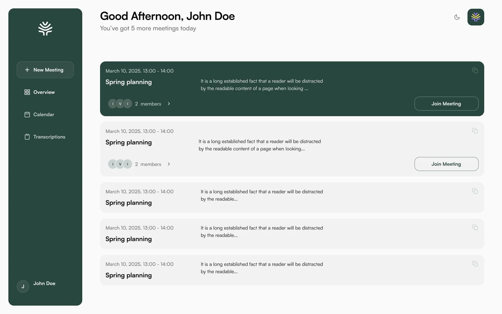